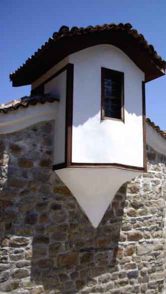

4 ÐÑÑÑи ме, маÑко-ле мила
Permets-moi, ma chère mère
(Deseta Rukovet - 10ème guirlande :04:25 - 06:50 )
|
 |
|
 Version Mokranjac
Version Mokranjac
 Version Pavle AksentijeviÄ
Version Pavle AksentijeviÄ
NOTES
| [1] ÐиÑам наÑао дÑÑÐ³Ñ Ð²ÐµÑзиÑÑ Ð¾Ñим адапÑаÑиÑе Ðавла ÐкÑенÑиÑевиÑа (poд. 1942) и инÑÑÑÑменÑалне гÑÑпе âÐапиÑâ. | [1] Je n'ai trouvé d'autre version qu'une adaptation de Pavle AksentijeviÄ (né en 1942) et du groupe instrumental "Zapis". |